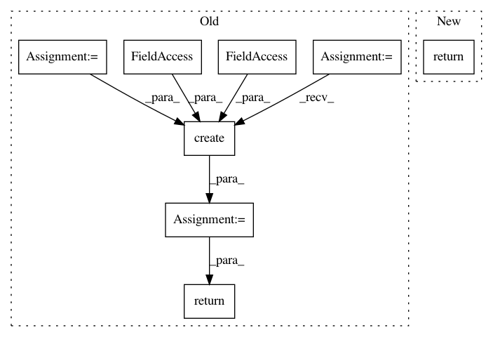

5bfd6cdef169103f539a092920f0004bfa5fb6f4,src/python/pants/option/options_bootstrapper.py,OptionsBootstrapper,get_full_options,#OptionsBootstrapper#Any#,174
Before Change
if key not in self._full_options:
// Note: Don"t inline this into the Options() call, as this populates
// self._post_bootstrap_config, which is another argument to that call.
bootstrap_option_values = self.get_bootstrap_options().for_global_scope()
self._full_options[key] = Options.create(self._env,
self._post_bootstrap_config,
known_scope_infos,
args=self._args,
bootstrap_option_values=bootstrap_option_values,
option_tracker=self._option_tracker)
return self._full_options[key]
def verify_configs_against_options(self, options):
Verify all loaded configs have correct scopes and options.
After Change
scopes.
:rtype: :class:`Options`
return self._full_options(tuple(sorted(set(known_scope_infos))))
def verify_configs_against_options(self, options):
Verify all loaded configs have correct scopes and options.
In pattern: SUPERPATTERN
Frequency: 4
Non-data size: 8
Instances
Project Name: pantsbuild/pants
Commit Name: 5bfd6cdef169103f539a092920f0004bfa5fb6f4
Time: 2018-12-06
Author: stuhood@twitter.com
File Name: src/python/pants/option/options_bootstrapper.py
Class Name: OptionsBootstrapper
Method Name: get_full_options
Project Name: biocore/scikit-bio
Commit Name: 37177ecd552cc8cc30586a1a041eddcc4b2a9841
Time: 2016-06-24
Author: ebolyen@gmail.com
File Name: skbio/util/_decorator.py
Class Name: classonlymethod
Method Name: __get__
Project Name: biocore/scikit-bio
Commit Name: 5da3b4a48dcc59e65d3b7c99bd9b4d284bef1ed5
Time: 2016-07-21
Author: ebolyen@gmail.com
File Name: skbio/util/_decorator.py
Class Name: classonlymethod
Method Name: __get__
Project Name: pantsbuild/pants
Commit Name: 008ce42cb55e529319f53abeb00fc6cf3918f548
Time: 2018-08-06
Author: stuhood@twitter.com
File Name: src/python/pants/pantsd/service/scheduler_service.py
Class Name: SchedulerService
Method Name: prefork